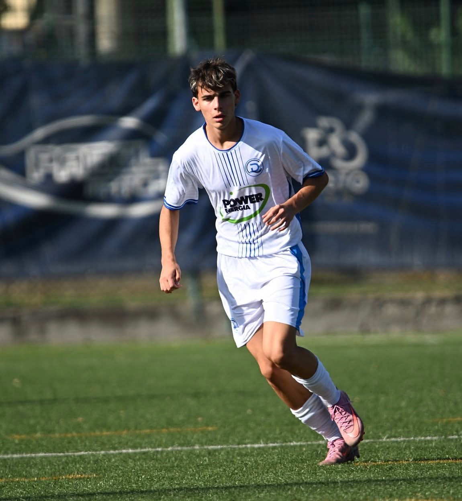
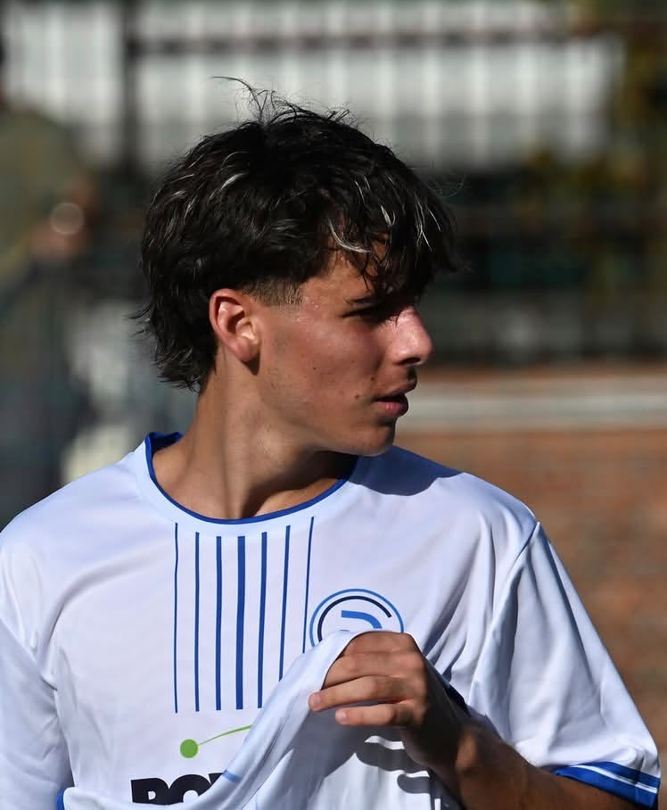

Giotto
Capelli
Attaccante
Classe 2009
Squadra attuale
Desenzano
Primavera U19 / 2026–27
In collaborazione con FS Sport Management
Un profilo
offensivo
Attaccante · classe 2009

Dati giocatore
- Anno di nascita
- 2009
- Altezza indicativa
- 180 cm
- Peso indicativo
- 65 kg
- Piede preferito
- Ambidestro
Identità tecnica
Ruoli e
caratteristiche
Punta, seconda punta, esterno offensivo e trequartista.
Attaccante impiegato in più ruoli del reparto offensivo. Le azioni selezionate documentano finte e rotazioni, passaggi d’esterno e no-look, conclusioni acrobatiche, pallonetti e finalizzazioni in area.
Il percorso
Esperienze e rendimento per stagione.
Desenzano
Primavera U19
Nella rosa Primavera U19. Una rete ufficiale su punizione al 90°, all’incrocio dei pali. A segno anche nell’amichevole contro il Carpi.
Lumezzane
U17 nazionali
Quattro reti ufficiali e progressivo inserimento tra i titolari. Chiamato dalla Primavera, non prende parte all’attività a causa di un infortunio.
Voluntas Brescia
U16 regionali
Ventuno reti complessive: 20 in campionato e una nei playoff. Miglior marcatore della squadra, dopo un avvio dalla panchina e il successivo inserimento con continuità.
Highlight
In campo
Raccolte video per squadra: goals e azioni.
Desenzano2026/27 · Primavera U19
Lumezzane2025/26 · U17 nazionali
Voluntas Brescia2024/25 · U16 regionali
Performance
& Development
Programma settimanale e supporto specialistico.
Settimana tipo
| Lun / Mar / Gio | Allenamento con il Desenzano |
|---|---|
| Mer | Lavoro di forza con Stefano Brasetti |
| Ven | Lavoro individuale in palestra su scheda Brasetti |
| Sab | Gara, secondo convocazione e impiego |
Supporto specialistico
Gunther Celli
Tecnica individuale, situazioni
di gioco e tiri (weekend)
Stefano Brasetti
Preparazione atletica
e lavoro di forza
Cristiano Cantarelli
Mental coaching
Mattia Broli
Nutrizione sportiva
Preparazione individuale
L’attività con la squadra è affiancata da lavoro tecnico individuale, preparazione atletica, mental coaching e supporto nutrizionale.